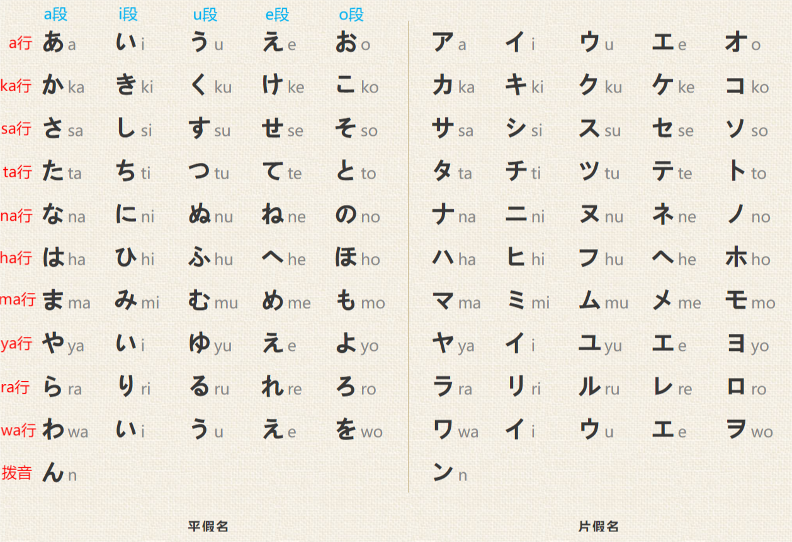
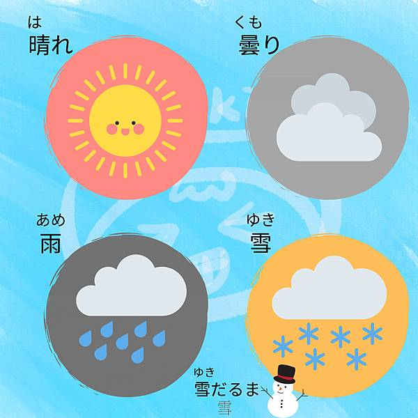
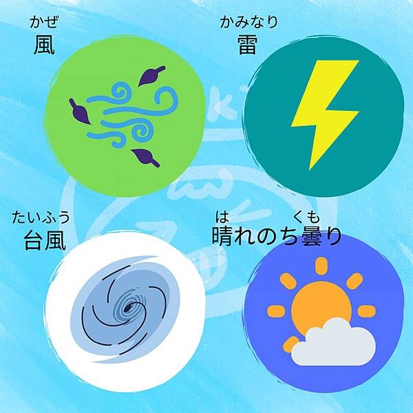
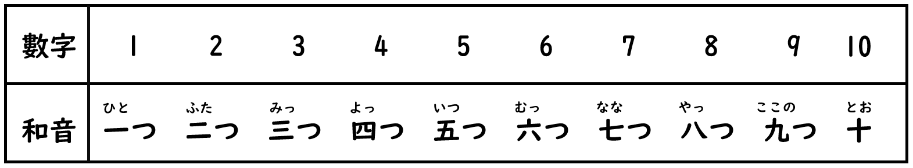

一、50音—平假名和片假名

二、單字篇
1.天氣

- 晴天
晴天 （はれ)
- 陰天
曇り (くもり)
- 雨天
雨 (あめ)
- 下雪
雪 (ゆき)
- 風
風 (かぜ)
- 雷
雷 (かみなり)
- 颱風
台風 (たいふう)
- 晴時多雲
晴れのち曇り (はれのちくもり)

- 梅雨
梅雨 (つゆ)
- 午後雷陣雨
夕立 (ゆうだち)
- 傾盆大雨
土砂降り (どしゃぶり)
- 悶熱
蒸し暑い (むしあつい)
- 霧
霧 (きり)
- 海嘯
津波 (つなみ)
- 地震
地震 (じしん)
2.食物
- 冰淇淋
アイスクリーム
- 早餐
朝ご飯
- 烏龍麵
- 糖果、餅乾
お菓子（おかし）
- 便當
お弁当（おぺんとう）
- 親子丼
親子丼（おやこどん）
- 豬排蓋飯
カツどん
- 咖哩飯
カレーライス
- 狐狸烏龍麵
きつねうどん
- 水果
果物（くだもの）
- 飯
ご飯（ごはん）
- 壽司
寿司（すし）
- 晚餐
晩ご飯
- 午餐
昼ご飯
- 蔬菜
野菜（やさい）
3.時間
4.國家
- 台灣
タイワン
- 韓國
くゎんくく
- 中國大陸
ちゅうごく
- 新加坡
シンガポール
- 德國
ドイツ
- 法國
フランス
- 泰國
タイ
- 瑞士
スイス
- 美國
アメリカ
- 俄羅斯
ロシア
- 加拿大
カナダ
- 瑞典
スウェーデン
- 芬蘭
フィンランド
- 馬來西亞
マレーシア
- 印度
インド
5.顏色(形容詞)
- 紅色
あかい
- 橘色
オレンジ
- 黃色
きいろい
- 綠色
みどり
- 藍色
あおい
- 青色
ライムグリーン
- 紫色
むらさき
- 白色
しろい
- 黑色
くろい
- 粉紅色
ピンク
- 銀色
ぎんいろ
6.興趣
- 跳舞
ダンス
- 園藝
ガーデニング
- 露營
キャンプをする
- 畫圖
絵画（かいが）
- 料理
料理（りょうり）
- 旅行
旅行（りょこう）
- 運動
運動（うんどう）
- 登山
山登り（やまのぼり）
- 照相
写真を撮（しゃしんをとる）
- 聽音樂
音楽を聞く（おんがくをきく）
7.運動
- 排球
バレーボール
- 羽球
バドミントン
- 籃球
バスケットボール
- 桌球
たっきゅう
- 網球
テニス
- 高爾夫
ゴルフ
- 撞球
ビリヤード
- 足球
サッカー
- 棒球
野球 やきゅう
8.數字1-10

三、文法句型篇
- AはBです/だ。 A是B
例如: 彼女は先生です/だ。 她是老師。
助詞「は」的角色：表示「話題」，而通常該話題是先前「已經提過的」，故句子想傳達的焦點在「は」的後面，有時可兼當句子的主格。
- AはBではありません。A不是B。
例如: 私は学生ではありません。 我不是學生。
「ありません」是表達否定、不是的意思。
- AはBですか。A是B嗎?
例如: 林さんは学生ですか。 林先生是學生嗎?
句尾加上「か（ka）」就能夠表達否定的意思，幾乎所有的否定句都會加上「か（ka）」
- AはBではありませんか。A不是B嗎?
例如: 林さんは学生ではありませんか。 林先生不是學生嗎?
- AにBがいます。 在A這裡有B。
例如: 図書館に学生がいます。 在圖書館裡有學生。
- AにBがいあります。 在A這裡沒有B。
例如: 部屋に机があります。 房間裡有一張桌子。
四、對話篇
(1) 問候
- 早安。 おはようごぢいます。
- 晚上好。 こんばんは。
- 初次見面你好。 はじめまして。
- 請多多指教。 どうぞよろしくお願いします。
- 明天見。 またあした。
- 再見。 さようなら。
- 謝謝。 どうもありがとうございます。
(2) 買東西
- 請問這個多少錢? いくらですか。
- 下一位這邊請！ お次の方どうぞ！。
- 請問有點數卡嗎？ ポイントカードはお持ちですか。
- 請點選確認按鈕。 ボタンを押してください。
- 需要幫您加熱便當嗎? お弁当温めますか。
- 請稍等一下。 少々お待ちください。
- 讓您久等了。 お待たせいたしました。
- 需要分開裝嗎? 袋はお分けしますか。
- 需要袋子嗎？ 袋にお入れしますか。
六、文化篇
日本是一個四面環海的島國，自然資源豐富，因此他們重視自然流動中的一切，與大自然達成和平共處。
超過2000年的歷史，日本的傳統文化，例如和服、茶道、藝術、文學，甚至是養生之道等都十分具有文化特色，而科技進步，影視產業的發達更深深影響世界。
我曾經到日本旅遊過，當地的風俗民情、傳統文化、美麗的市容和景點都令我印象深刻。
希望自己未來能有幸再次拜訪這美麗的國家!
日本文化冷知識